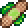

Medicated Bandage

Recipe for Medicated Bandage
To craft the Medicated Bandage, you will need:
Adhesive Bandage
Click here to view the drop percentages and which enemies drop them
Bezoar
Click here to view the drop percentages and which enemies drop them
Buff/inmunities of this object
When you equip the Medicated Bandage, you will be inmune to the following debuffs:
After you are done crafting the Medicated Bandage you would need to combine it with other items to create the ankh charm
Ankh Charm:
Click to view its crafting recipe